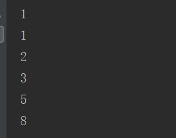

原文出处:本文由博客园博主心悦君兮君不知-睿提供。
原文连接:https://www.cnblogs.com/ruigege0000/p/11576020.html
原文连接:https://www.cnblogs.com/ruigege0000/p/11576020.html
一、生成器
1.定义（generator）:一边循环一边计算下一个元素的机制/算法
2.满三个条件
（1）每次调用都能产生出for循环需要的下一个元素
（2）如果达到最后一个后，能够爆出StopIteration异常
（3）可以被next函数调用
3.如何生成一个生成器
（1）直接使用
l = [x*x for x in range(5)]#放在中括号中就是列表生成器
g = (x*x for x in range(5))#放在小括号中就是生成器
print(type(l))
print(type(g))#type函数就是返回的是括号内的变量类型（2）如果函数中包含yield，则这个函数就叫生成器
（3）next调用函数，遇到yield返回后面的值
注意：它与return的区别在于，return语句之后，他结束了，但是yield之后，这个函数仍然可以继续运行
def odd():
print("Step 1")
yield 1#在函数odd中，yield负责返回，不用return是因为
print("Step 2")
yield 2
print("Step 3")
yield 3
if __name__ == "__main__":
one=next(odd())#odd()是调用生成器
print(one)
two = next(odd())
print(two)
three = next(odd())
print(three)解释：这里的odd()生成器生成了三次，所以没有得到我们想要的结果，稍作修改，让生成器只生成一次
if __name__ == "__main__":
m= odd()
one=next(m)#odd()是调用生成器
print(one)
two = next(m)
print(two)
three = next(m)
print(three)（4）for循环调用生成器
def fib(max):
n,a,b = 0,0,1
while n < max:
yield b
a,b = b,a+b
n += 1
if __name__ == "__main__":
m2 = fib(10)
# print(m2)
for i in range(6):
rst = next(m2)
print(rst)
二、源码d27_2_iterator_and_yielf_usage.py
https://github.com/ruigege66/Python_learning/blob/master/d27_2_iterator_and_yielf_usage.py
2.CSDN：https://blog.csdn.net/weixin_44630050（心悦君兮君不知-睿）
3.博客园：https://www.cnblogs.com/ruigege0000/
4.欢迎关注微信公众号：傅里叶变换，个人公众号，仅用于学习交流，后台回复”礼包“，获取大数据学习资料